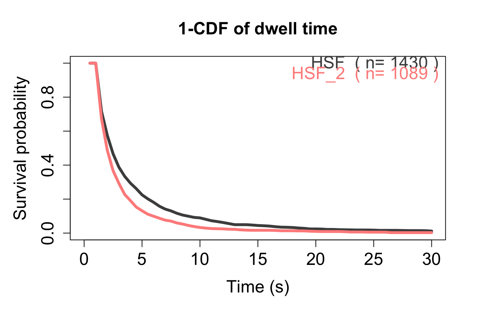

Compare Residence time/Survival Curve of multiple trackll. Or simply plot the survival curve of one trackll.
compare_RT_CDF(trackll=NULL,x.max=30, filter=c(min=3,max=Inf),t.interval=0.5,output=FALSE)
| trackll | trajectory list generated by createTrackll() and processing. if NULL, user will be prompted to enter the trackll name. |
|---|---|
| x.max | The maximum range of X axis, i.e. time, for the output plot. Default 30 sec. |
| filter | Filter the tracks by step/frame number (length). Only tracks pass through filter will be selected. |
| t.interval | time interval for image aquisition. Default 0.5 sec. |
| output | An Logical indicate if output should be generated. See Values for detail. |
csv: 1-CDF of track lengths and time intervals output in .csv format, when output = TRUE.
Plot: 1-CDF of track lengths of each input trackll will be plotted together in one plot.
Compare Residence time/Survival Curve of multiple track list (trackll). Or simply plot the survival curve of one trackll. The survival curve/probability is calculated as 1-CDF of the length of tracks/trajectories.
If the acquisition time interval of the tracklls are different, set argument trackll=NULL, users will be prompted to input the number of the track list (trackll) to compare/plot. Then users will be prompted to input the name and acquisition time interval of each trackll. The trackll should be masked and merged. The maximum time range to be plotted can be set using x.max, this will not change the curve/probabiltiy, which is determined by all track information in the trackll.
# Generate trackll, and process, # e.g. mask region of interest, merge tracks from multiple files. folder1=system.file('extdata','HSF',package='sojourner') trackll1=createTrackll(folder1,input=3, cores = 2)#> Initiated parallel execution on 2 cores #> #> Stopping clusters... #> #> Process complete.#> Reading mask file HSF-Halo_1_MASK.tif #> Reading mask file HSF-Halo_2_MASK.tif #> #> All files masked.#> #> Merging of folder HSF complete.folder2=system.file('extdata','HSF_2',package='sojourner') trackll2=createTrackll(folder2,input=2, cores = 2)#> Initiated parallel execution on 2 cores #> #> Stopping clusters... #> #> Process complete.#> Reading mask file HSF-Halo_3_MASK.tif #> #> All files masked.#> #> Merging of folder HSF_2 complete.# Plot and output the survival curve, compare_RT_CDF(trackll=c(trackll1,trackll2),x.max=30, filter=c(min=3,max=Inf),t.interval=0.5,output=FALSE)#> applying filter, min 3 max Inf #> applying filter, min 3 max Inf